导航与用途
参数配置与查处管理、责任区域管理、报警处置移动端同级；误报类型配置为参数配置下二级菜单，用于维护复核误报原因，不新增算法类型。
由根目录原型标注.md同步生成，包含已保存的手工标注。页面截图独立保留，不因文字保存自动重拍。
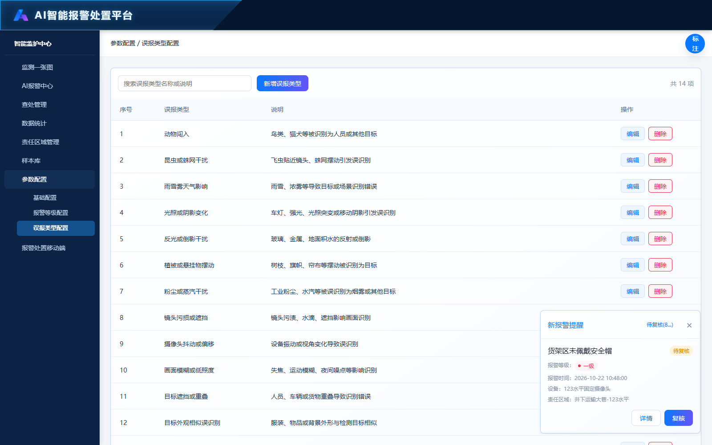
页面截图为实际预览快照；标注文字保存后即时同步，截图需重新拍摄刷新。
参数配置与查处管理、责任区域管理、报警处置移动端同级；误报类型配置为参数配置下二级菜单，用于维护复核误报原因，不新增算法类型。
首次使用提供14项误报原因，每项含稳定ID、名称和说明。配置未保存时读取默认字典；显式删除全部类型后保留空列表，不自动恢复默认值。
关键词匹配类型名称和说明，实时过滤并显示命中数量。列表展示序号、误报类型、说明和编辑/删除操作；无记录时显示空态。
配置页与复核页使用同一浏览器本地字典。新增、修改、删除后，复核页在重新打开、切回窗口或收到存储变化时重新读取选项。选中项使用稳定ID，更名保留对应ID；已删除的选中项清空。
配置保存在本机浏览器本地存储，未接入后端或跨设备共享；浏览器策略、不同来源或清除存储可能影响恢复。读取与写入失败均有错误提示。
新增按钮打开新增弹窗，编辑操作打开当前记录。名称必填、去除首尾空格后不可为空、最多40字符、不可与其他记录重名；说明选填、最多200字符。保存成功后关闭弹窗并刷新列表；失败保留输入并提示。取消或Esc关闭，不保存。
点击删除打开确认框，显示类型名称和删除后的下拉影响。取消保留记录；确认删除后保存并刷新列表；存储失败在弹窗显示错误。删除后复核下拉不再提供该项，不代表已实现历史复核记录迁移。
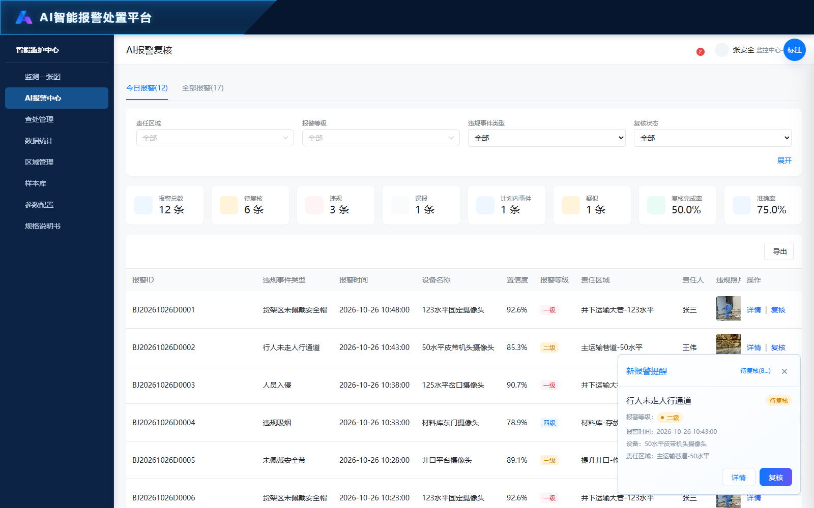
页面截图为实际预览快照；标注文字保存后即时同步，截图需重新拍摄刷新。
AI报警详情-复核结果（2026-10-26实际截图；本次仅更新权限说明）
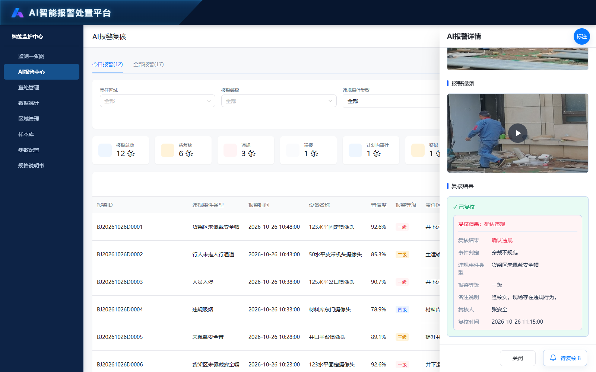
AI报警中心仅展示AI来源，消防保持来源隔离。接收和处理转由华南执行，本地保留复核与查看。华南每次提交后比对最新数据并更新复核结果与处理状态，首次正确可被后续疑似替代；真实回传接口尚待联调。
今日报警按当日日期过滤；全部报警包含历史记录。Tab显示实际记录数。今日不显示时间筛选，全部显示单个起止时间选择器，默认最近一个月；切回今日不应用全部页的时间限制。
默认只显示首行条件，其余条件通过展开/收起切换。支持违规事件类型、复核状态、复核结果、复核是否超期及关键词组合筛选。切换与输入后更新列表、统计和空态。
复核结果为确认违规、误报、计划内事件、疑似。疑似作为独立结果计入已复核数量，不计入确认违规、误报和准确率样本，不自动生成查处记录。识别准确率＝确认违规÷（确认违规＋误报）；复核率＝已复核÷报警总量。
显示报警ID、事件类型、时间、设备、置信度、一级至四级报警等级、责任区域、责任人、照片、复核状态、结果、复核人、复核时间及复核超期。等级按事件类型配置映射；操作列固定在右侧。
复核时限来自基础配置，默认5分钟。未复核从报警计时到当前；已复核计算到复核时间。超过时限显示具体超期秒数或分钟，等于时限不超期。列表支持按是否超期筛选。
【2026-10-27确认的按钮权限】仅复核人员可见并操作复核及提交复核结果按钮；仅适用于待复核的AI报警。值守人员、处置人员和其他角色只可查看详情，不具有复核权限。已复核记录不允许重复提交；消防不提供AI复核。入口、页面提交及直接链接都应校验角色与记录状态。此为确认的权限要求，当前静态原型未全面实现角色鉴权。
新增报警事件入口可接收数据，但演示计时不等于真实后台推送。报警中心原型的分页、导出仍为既有演示控件，不宣称后端分页或真实导出。
从统计页面下钻进入时才显示返回按钮；按钮位于“今日报警／全部报警”Tab所在行最右侧，不放在顶部页面标题之前。点击返回来源统计页并恢复已保存筛选。直接进入业务页不显示该返回按钮。
标题为AI报警详情。基本信息保留报警ID、事件类型、时间、设备、置信度、等级、责任区域、责任人、复核超期；不展示违章人员及四个复核字段，不提供查看位置。照片可查看，视频显示封面和播放按钮；无视频源时提示暂无可播放视频。
复核结果为确认违规、误报、计划内事件、疑似。疑似作为独立结果计入已复核数量，不计入确认违规、误报和准确率样本，不自动生成查处记录。识别准确率＝确认违规÷（确认违规＋误报）；复核率＝已复核÷报警总量。事件判定为独立字段，示例选项为违规或异常、穿戴不规范、画面异常、算法误报。复核页位于复核结果上方，可选择并随提交保存；详情位于复核结果区块内，紧跟复核结果字段，无值显示“—”。不将事件判定等同于复核结果，不放入查处详情的报警基本信息。
各业务页共用右下角提醒。当前演示先显示第一条，5秒后第二条，停止轮播；两条分别于出现10秒后消失，最多2条，最新在底部。单条可关闭。有提醒时隐藏数量悬浮入口，无提醒时恢复。
提醒名称右侧显示待复核状态，等级使用语义颜色；头部关闭左侧为待复核(数量...)入口。入口或悬浮数量打开全部待复核抽屉；详情和复核分别携带当前alarmId跳转；关闭、Esc恢复页面。
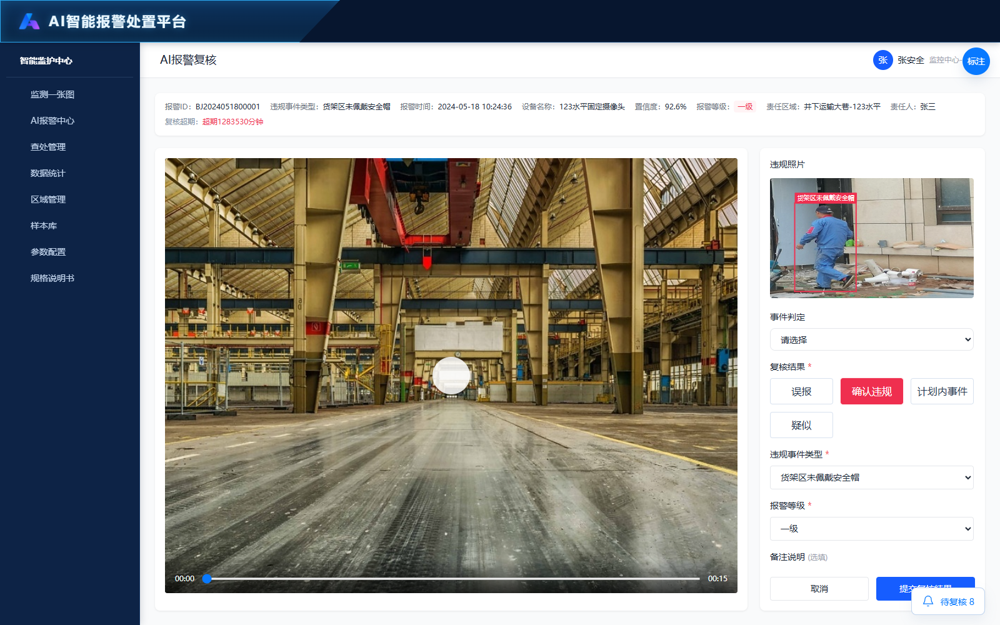
页面截图为实际预览快照；标注文字保存后即时同步，截图需重新拍摄刷新。
由待复核报警进入，携带alarmId并加载对应演示记录；复核超期显示与基础配置一致。返回入口指向AI报警中心。
显示当前报警ID、事件类型、报警时间、设备、置信度、等级、责任区域、责任人、复核超期。照片随记录变化；监控播放和目标框仍包含演示表现，不视为真实视频分析能力。
复核结果为确认违规、误报、计划内事件、疑似。疑似作为独立结果计入已复核数量，不计入确认违规、误报和准确率样本，不自动生成查处记录。识别准确率＝确认违规÷（确认违规＋误报）；复核率＝已复核÷报警总量。
显示误报类型及通用备注。误报类型使用误报类型配置字典；新增、修改、删除后复核选项同步读取。
确认违规必须选择有效事件类型及报警等级。最终报警及上报取事件类型与摄像头配置中较高等级，一级最高、四级最低；未配置摄像头等级时按事件类型。仅AI核警确认违规后生成一份处置任务并触发责任区域全员短信，误报、计划内事件不生成任务及处置短信。
展示计划内事件结果及通用备注，不强制填写与该分支无关的事件类型或误报原因。
【2026-10-27确认的按钮权限】仅复核人员可见并操作复核及提交复核结果按钮；仅适用于待复核的AI报警。值守人员、处置人员和其他角色只可查看详情，不具有复核权限。已复核记录不允许重复提交；消防不提供AI复核。入口、页面提交及直接链接都应校验角色与记录状态。此为确认的权限要求，当前静态原型未全面实现角色鉴权。事件判定与复核结果一并保存，保存失败保留输入。
保留携带报警ID及大屏来源参数的兼容入口，加载记录并提供返回监测一张图。结果、事件类型和等级按分支校验，误报必选原因；提交确认后写入浏览器共享记录并返回，失败保留输入，已复核阻止重复提交。当前大屏复核默认在大屏页内弹窗完成。
事件判定为独立字段，示例选项为违规或异常、穿戴不规范、画面异常、算法误报。复核页位于复核结果上方，可选择并随提交保存；详情位于复核结果区块内，紧跟复核结果字段，无值显示“—”。不将事件判定等同于复核结果，不放入查处详情的报警基本信息。
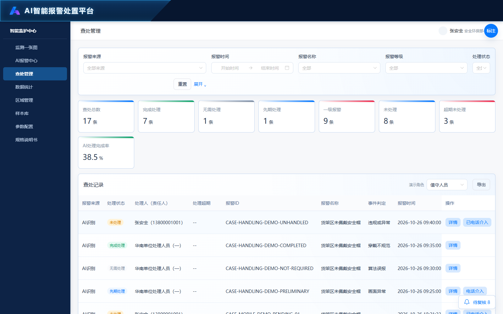
页面截图为实际预览快照；标注文字保存后即时同步，截图需重新拍摄刷新。
查处详情-复核结果（2026-10-26实际截图；本次仅更新权限说明）
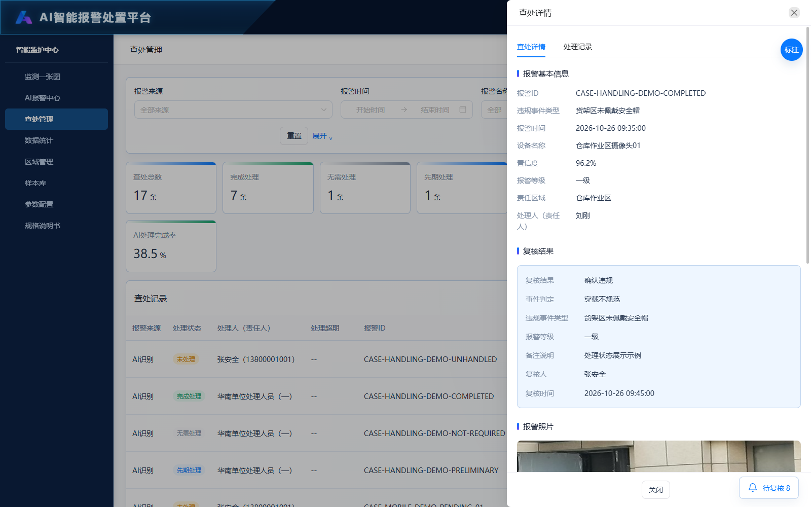
查处详情-处理记录（2026-10-26实际截图；本次仅更新权限说明）
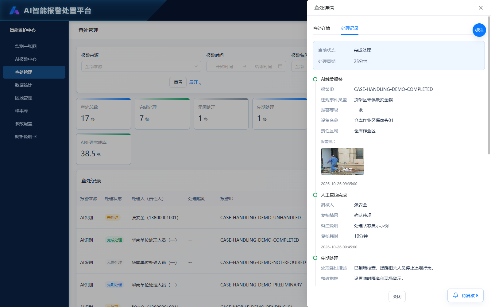
接收和处理由上级华南平台执行。本地查处管理及今日报警、楼层报警隐藏接收和处理按钮；查处管理列表、详情底栏和旧处置链接均不再提供本地处理入口，旧链接只打开详情。保留复核、详情、电话介入和结果查看。华南真实接口尚未接入。
处理状态统一为未处理、完成处理、无需处理、先期处理。先期处理只表示中间进度，未完成；完成处理表示已执行并完成，无需处理表示经核实无需采取处理措施。当前原型按完成处理、无需处理结束跟进；无需处理的最终业务判定以华南平台规则确认为准。移除复核超期筛选。
处理状态统一为未处理、完成处理、无需处理、先期处理。先期处理只表示中间进度，未完成；完成处理表示已执行并完成，无需处理表示经核实无需采取处理措施。当前原型按完成处理、无需处理结束跟进；无需处理的最终业务判定以华南平台规则确认为准。
查处列表在报警名称后展示事件判定；列表、筛选、统计、详情及导出中的处置文案统一改为处理，包括处理状态、处理人、处理时间、处理周期、处理记录。移除复核超期字段及其筛选、基本详情、时间轴和导出项。AI报警中心的复核超期未因此删除。
列表增加报警来源列，全部来源混排时消防的AI专属字段显示—；只看消防时隐藏等级、复核、置信度、违规人员、接收及处置填写相关列。AI记录按状态提供接收、处置、详情与电话介入；消防只提供详情及待处置时的值守电话记录。导出沿用当前筛选和来源字段，不导出消防旧AI字段。
【2026-10-27恢复入口并确认权限】仅处置人员可见并操作处置、去处置、提交处置按钮；仅适用于未处理或先期处理的AI记录，无需本地接收。完成处理、无需处理和消防记录只读。复核人员、值守人员和其他角色只可查看详情。列表、详情底栏、表单提交及直接链接均应校验角色和状态。当前处置入口与表单已恢复，角色鉴权要求待实现。
保留处理超期展示；移除查处管理中的复核超期。处理记录按时间顺序展示报警、人工复核、多次先期处理和最终处理完成。先期处理支持多条独立更新，各有更新时间、处理说明、措施、人员和可放大的处理照片，不展示处理完成时间、处理周期；最终处理完成节点保留完成时间、周期及结果。已完成示例包含两次先期处理。查处详情已移除独立处理结果区块，结果统一在处理记录查看。
【2026-10-27恢复入口并确认权限】仅处置人员可见并操作处置、去处置、提交处置按钮；仅适用于未处理或先期处理的AI记录，无需本地接收。完成处理、无需处理和消防记录只读。复核人员、值守人员和其他角色只可查看详情。列表、详情底栏、表单提交及直接链接均应校验角色和状态。当前处置入口与表单已恢复，角色鉴权要求待实现。
【原本地操作入口已隐藏】接收和处理由上级华南平台执行。本地查处管理及今日报警、楼层报警隐藏接收和处理按钮；查处管理列表、详情底栏和旧处置链接均不再提供本地处理入口，旧链接只打开详情。保留复核、详情、电话介入和结果查看。华南真实接口尚未接入。
【原本地操作入口已隐藏】处理记录按时间顺序展示报警、人工复核、多次先期处理和最终处理完成。先期处理支持多条独立更新，各有更新时间、处理说明、措施、人员和可放大的处理照片，不展示处理完成时间、处理周期；最终处理完成节点保留完成时间、周期及结果。已完成示例包含两次先期处理。查处详情已移除独立处理结果区块，结果统一在处理记录查看。
【按钮权限】仅值守人员可新增电话介入、再次介入和保存介入记录；仅在记录尚未完成处理且非无需处理时允许。复核人员、处置人员和其他角色只能查看已有记录，不得新增或修改。电话记录不改变复核结果或处理状态，不自动拨号。消防仍只读同步状态，电话介入沿用其适用条件，不获得本地处置权限。前端按钮限制不代替服务端校验。
原型包含未处理、完成处理、无需处理、先期处理示例。完成处理示例含两次先期处理更新，每条独立展示说明、人员与照片；最终节点保留完成时间和周期。真实华南回传尚待对接。
从统计页面下钻进入时，返回按钮位于筛选条件卡片上方的独立操作行，靠右对齐，不放在顶部页面标题之前。点击返回来源统计页并恢复筛选。直接打开业务页不显示该返回按钮。
保留来源参数及报警ID定位，旧处置链接只打开详情，不允许接收或处理。
明确AI识别和消防设备来源。旧消防演示携带的复核、等级或处置字段不作为本地业务资格；显示外部报警状态，不允许旧本地AI处置记录覆盖。AI烟雾、焰火、消防通道堵塞等事件按AI来源继续走复核处置。
区分AI识别与消防设备，依据可信来源字段和设备关联，不根据事件名称猜测。
处理状态取未处理、完成处理、无需处理、先期处理，以华南最新回传为准。
处理人由来源记录或华南回传提供，不与违规人员混淆；本地不再接收或锁定处理人。
处理超期当前仍保留原型展示；生产起点及回传时限口径待华南接口联调确认，不将本地接收规则作为新流程要求。
唯一业务事件编号，用于关联核警、接收、处置和电话；合并信号不重复生成事件编号。
展示事件类型，AI烟雾、焰火等仍按AI来源处理；消防同名不能混入AI任务。
首次报警时间，用于时间查询及完整处置周期，合并信号不覆盖首次时间。
来源摄像头或消防设备，结合所属区域定位现场。
AI识别置信度，仅展示来源提供值，不是人工核警结果；消防不适用。
AI一级最高、四级最低，取事件类型与摄像头配置中较高等级；消防无本地AI等级。
设备所在楼栋／楼层／区域路径，和责任区域管理关联，用于匹配短信通知人员。
AI现场照片可点击放大，不会改变状态；消防不填AI报警图片字段。
记录AI实际核警人员，不以当前登录人替代历史人员；消防不适用。
AI核警完成时间，与报警、通知、接收及完成时间分开；消防不适用。
【已移除】查处管理不再显示复核超期字段，列表、详情、时间轴及导出同步移除。AI报警中心复核超期保留。
处置登记的行为当事人，用于历史及统计，区别于负责人和核警人。
【已移除】本地接收入口及接收时间字段已移除，接收由华南执行。
处理完成时间只用于最终完成节点；先期处理节点不展示完成时间。
处理周期用于最终处理完成记录；先期处理详情与节点不展示周期。
打开对应AI查处详情或消防只读详情。AI支持查处详情／处置记录，消防同步外部信息及电话记录；查看不改变状态。
【入口已隐藏】本地不再接收，由华南平台执行；列表和详情均不提供接收按钮。
【2026-10-27恢复入口并确认权限】仅处置人员可见并操作处置、去处置、提交处置按钮；仅适用于未处理或先期处理的AI记录，无需本地接收。完成处理、无需处理和消防记录只读。复核人员、值守人员和其他角色只可查看详情。列表、详情底栏、表单提交及直接链接均应校验角色和状态。当前处置入口与表单已恢复，角色鉴权要求待实现。
【按钮权限】仅值守人员可新增电话介入、再次介入和保存介入记录；仅在记录尚未完成处理且非无需处理时允许。复核人员、处置人员和其他角色只能查看已有记录，不得新增或修改。电话记录不改变复核结果或处理状态，不自动拨号。消防仍只读同步状态，电话介入沿用其适用条件，不获得本地处置权限。前端按钮限制不代替服务端校验。
查看原型中的责任区域候选人员，不代表已接收或已成为处理人，真实处理人以华南回传为准。
导出当前全部命中记录而非仅当前分页，保留来源及筛选；消防不输出AI专属字段。当前原型为CSV导出。
角色权限矩阵：复核人员→复核；处置人员→处置；值守人员→电话介入；其他角色→详情只读。权限同时受记录状态、报警来源限制。演示角色切换不等于真实账号授权。
清空既有查询条件，恢复默认范围，列表重新计算；不删除业务记录。
展开显示更多过滤条件，收起仅隐藏筛选项；查询含义按当前有效条件执行，不提交业务状态。
显示全部命中条数；切换页码查看另一页，可选择每页10／20／50条；仅改变展示，不改变统计口径或导出范围。
可选AI识别／消防设备或清空为全部；切换清除不适用条件并回到第一页。
按报警发生时间范围筛选，不用核警、接收或完成时间代替。
按当前来源可用事件类型筛选，可清空。
只筛AI一级至四级，消防模式隐藏，不让历史隐藏等级条件限制消防结果。
处理状态筛选为未处理、完成处理、无需处理、先期处理。
AI按接收至完成或当前时间与时限比较，未接收不计处置超期。
按来源设备所在区域筛选，可清空恢复全部。
【已移除】查处管理不再提供复核是否超期筛选，隐藏条件不得继续限制查询。
匹配报警ID、设备、责任区域、处置人、复核人及违规人员，可与其他筛选组合。
华南每次先期处理或后续处理提交后，本地收到回传应立即比对对应记录，字段有变更时以最新提交数据更新，不锁定第一次结果。回传后本地自动为已复核，复核超期以本次回传数据为准；有效性正确映射确认违规，后续改为疑似则复核结果也改为疑似。处理状态同步更新，第一次、第二次等历史节点继续保留。其他有效性映射、接口字段和顺序版本规则待联调确认。本项为用户确认的对接需求，本次未实现实时回传功能。
事件判定为独立字段，示例选项为违规或异常、穿戴不规范、画面异常、算法误报。复核页位于复核结果上方，可选择并随提交保存；详情位于复核结果区块内，紧跟复核结果字段，无值显示“—”。不将事件判定等同于复核结果，不放入查处详情的报警基本信息。处理记录按时间顺序展示报警、人工复核、多次先期处理和最终处理完成。先期处理支持多条独立更新，各有更新时间、处理说明、措施、人员和可放大的处理照片，不展示处理完成时间、处理周期；最终处理完成节点保留完成时间、周期及结果。已完成示例包含两次先期处理。查处详情已移除独立处理结果区块，结果统一在处理记录查看。
【按钮权限】仅值守人员可新增电话介入、再次介入和保存介入记录；仅在记录尚未完成处理且非无需处理时允许。复核人员、处置人员和其他角色只能查看已有记录，不得新增或修改。电话记录不改变复核结果或处理状态，不自动拨号。消防仍只读同步状态，电话介入沿用其适用条件，不获得本地处置权限。前端按钮限制不代替服务端校验。
详情及已有电话记录各角色可查看；只有值守人员可再次介入和保存新记录。【按钮权限】仅值守人员可新增电话介入、再次介入和保存介入记录；仅在记录尚未完成处理且非无需处理时允许。复核人员、处置人员和其他角色只能查看已有记录，不得新增或修改。电话记录不改变复核结果或处理状态，不自动拨号。消防仍只读同步状态，电话介入沿用其适用条件，不获得本地处置权限。前端按钮限制不代替服务端校验。
处理记录按时间顺序展示报警、人工复核、多次先期处理和最终处理完成。先期处理支持多条独立更新，各有更新时间、处理说明、措施、人员和可放大的处理照片，不展示处理完成时间、处理周期；最终处理完成节点保留完成时间、周期及结果。已完成示例包含两次先期处理。查处详情已移除独立处理结果区块，结果统一在处理记录查看。
消防只读同步消防管家的最新待处置／已处置状态及可用更新时间；不核警、不生成本地任务、不发送AI处置短信、不提供接收或处置提交。仍未处置且超期才支持电话介入，联系对象／内容／结果必填，分别最多30／500／100字；记录值守人员及时间，不修改外部状态，不写AI接收处置。已处置仅查看历史电话。超期依据未提供时显示待确认，不套AI时限；同步异常保留最近已知状态及时间，不冒充实时。真实接口尚待接入。
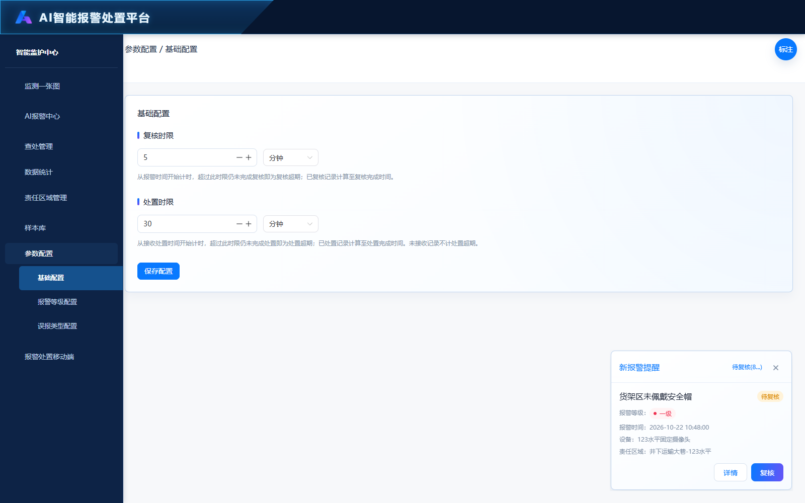
页面截图为实际预览快照；标注文字保存后即时同步，截图需重新拍摄刷新。
参数配置下二级菜单。卡片适应内容区宽度，输入与单位区域固定360px、靠左，不随卡片铺满。仅配置复核时限和处置时限，等级映射已移至独立页面。
复核默认5分钟，处置默认30分钟；单位支持分钟或秒，数值必须为正整数，换算后不超过365天。复核自报警起算，处置自接收起算；等于时限不算超期。
点击保存统一校验，保存到浏览器；成功提示，失败提示。报警列表、详情、复核页面和查处管理读取同一时限规则，统计与是否超期同步，不代表服务器全局配置。
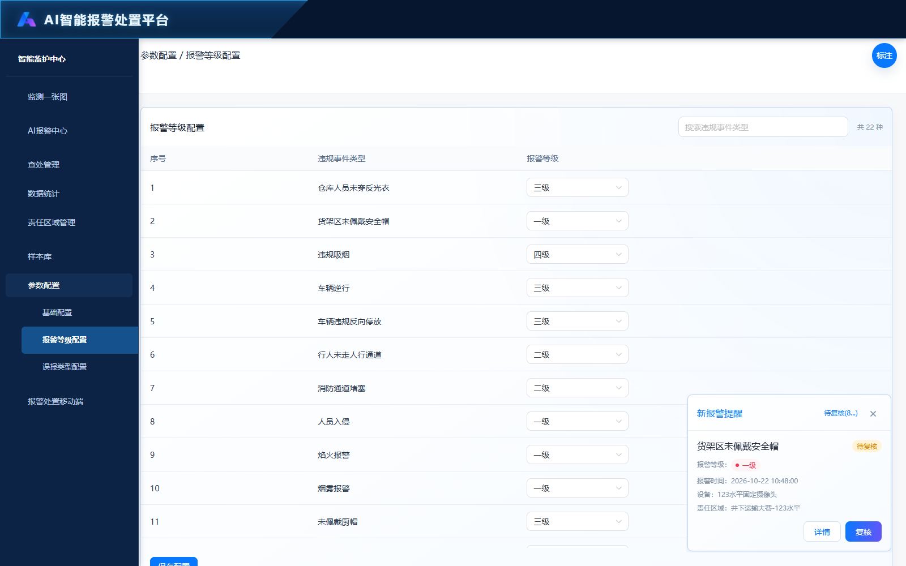
页面截图为实际预览快照；标注文字保存后即时同步，截图需重新拍摄刷新。
支持按22种违规事件类型配置等级；也可通过添加摄像头弹窗批量选择摄像头加入配置列表，再逐台指定等级。摄像头初始不配置等级，不要求覆盖全部摄像头；同一摄像头不可重复添加，支持修改和确认删除。
按摄像头配置内容区右上角为添加摄像头按钮。主列表支持摄像头名称、所属区域级联下拉（楼栋→楼层→区域，可仅选楼栋或楼层）与报警等级组合筛选；等级仅一级至四级，无未配置等级选项。列表含序号、报警摄像头、所属区域完整路径、报警等级、删除操作。添加弹窗保持楼栋、楼层、区域分项筛选，支持只筛楼栋或楼层，并可按名称及编号搜索；列表多选、全选当前结果，跨筛选保留勾选，已添加摄像头禁止重复勾选。确认加入主列表后逐台选择等级，未选等级不能保存；取消不添加。
保存配置统一保存事件类型及摄像头等级，添加、修改和删除在保存后生效，刷新保留。一级最高、四级最低；报警事件等级与上报等级均取事件类型等级和摄像头等级中较高者，未配置摄像头则使用事件类型等级。例如摄像头A一级、事件类型二级，最终报警和上报均为一级。当前为静态原型，未连接真实上报接口。
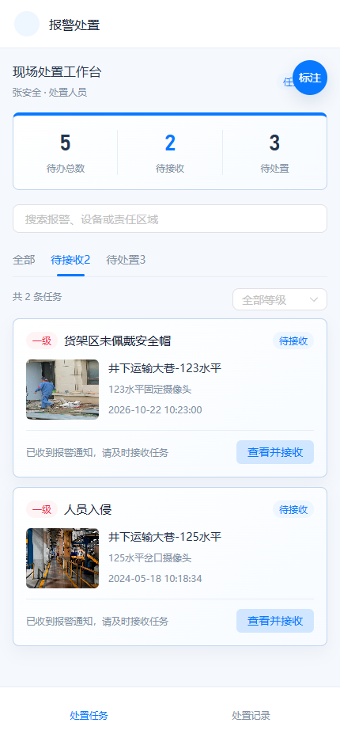
页面截图为实际预览快照；标注文字保存后即时同步，截图需重新拍摄刷新。
【历史保留／入口已移除】本地报警处置移动端导航入口已取消，接收和处理转由华南平台执行。页面文件与历史标注保留，不作为当前功能验收。
【历史保留／入口已移除】本地报警处置移动端导航入口已取消，接收和处理转由华南平台执行。页面文件与历史标注保留，不作为当前功能验收。
【历史保留／入口已移除】本地报警处置移动端导航入口已取消，接收和处理转由华南平台执行。页面文件与历史标注保留，不作为当前功能验收。
【历史保留／入口已移除】本地报警处置移动端导航入口已取消，接收和处理转由华南平台执行。页面文件与历史标注保留，不作为当前功能验收。
【历史保留／入口已移除】本地报警处置移动端导航入口已取消，接收和处理转由华南平台执行。页面文件与历史标注保留，不作为当前功能验收。
【历史保留／入口已移除】本地报警处置移动端导航入口已取消，接收和处理转由华南平台执行。页面文件与历史标注保留，不作为当前功能验收。
【历史保留／入口已移除】本地报警处置移动端导航入口已取消，接收和处理转由华南平台执行。页面文件与历史标注保留，不作为当前功能验收。
【历史保留／入口已移除】本地报警处置移动端导航入口已取消，接收和处理转由华南平台执行。页面文件与历史标注保留，不作为当前功能验收。
【历史保留／入口已移除】本地报警处置移动端导航入口已取消，接收和处理转由华南平台执行。页面文件与历史标注保留，不作为当前功能验收。
【历史保留／入口已移除】本地报警处置移动端导航入口已取消，接收和处理转由华南平台执行。页面文件与历史标注保留，不作为当前功能验收。
【历史保留／入口已移除】本地报警处置移动端导航入口已取消，接收和处理转由华南平台执行。页面文件与历史标注保留，不作为当前功能验收。
【历史保留／入口已移除】本地报警处置移动端导航入口已取消，接收和处理转由华南平台执行。页面文件与历史标注保留，不作为当前功能验收。
【历史保留／入口已移除】本地报警处置移动端导航入口已取消，接收和处理转由华南平台执行。页面文件与历史标注保留，不作为当前功能验收。
【历史保留／入口已移除】本地报警处置移动端导航入口已取消，接收和处理转由华南平台执行。页面文件与历史标注保留，不作为当前功能验收。
【历史保留／入口已移除】本地报警处置移动端导航入口已取消，接收和处理转由华南平台执行。页面文件与历史标注保留，不作为当前功能验收。
【历史保留／入口已移除】本地报警处置移动端导航入口已取消，接收和处理转由华南平台执行。页面文件与历史标注保留，不作为当前功能验收。
【历史保留／入口已移除】本地报警处置移动端导航入口已取消，接收和处理转由华南平台执行。页面文件与历史标注保留，不作为当前功能验收。
【历史保留／入口已移除】本地报警处置移动端导航入口已取消，接收和处理转由华南平台执行。页面文件与历史标注保留，不作为当前功能验收。
【历史保留／入口已移除】本地报警处置移动端导航入口已取消，接收和处理转由华南平台执行。页面文件与历史标注保留，不作为当前功能验收。
【历史保留／入口已移除】本地报警处置移动端导航入口已取消，接收和处理转由华南平台执行。页面文件与历史标注保留，不作为当前功能验收。
【历史保留／入口已移除】本地报警处置移动端导航入口已取消，接收和处理转由华南平台执行。页面文件与历史标注保留，不作为当前功能验收。
【历史保留／入口已移除】本地报警处置移动端导航入口已取消，接收和处理转由华南平台执行。页面文件与历史标注保留，不作为当前功能验收。
【历史保留／入口已移除】本地报警处置移动端导航入口已取消，接收和处理转由华南平台执行。页面文件与历史标注保留，不作为当前功能验收。
【历史保留／入口已移除】本地报警处置移动端导航入口已取消，接收和处理转由华南平台执行。页面文件与历史标注保留，不作为当前功能验收。
【历史保留／入口已移除】本地报警处置移动端导航入口已取消，接收和处理转由华南平台执行。页面文件与历史标注保留，不作为当前功能验收。
【历史保留／入口已移除】本地报警处置移动端导航入口已取消，接收和处理转由华南平台执行。页面文件与历史标注保留，不作为当前功能验收。
【历史保留／入口已移除】本地报警处置移动端导航入口已取消，接收和处理转由华南平台执行。页面文件与历史标注保留，不作为当前功能验收。
【历史保留／入口已移除】本地报警处置移动端导航入口已取消，接收和处理转由华南平台执行。页面文件与历史标注保留，不作为当前功能验收。
【历史保留／入口已移除】本地报警处置移动端导航入口已取消，接收和处理转由华南平台执行。页面文件与历史标注保留，不作为当前功能验收。
【历史保留／入口已移除】本地报警处置移动端导航入口已取消，接收和处理转由华南平台执行。页面文件与历史标注保留，不作为当前功能验收。
【历史保留／入口已移除】本地报警处置移动端导航入口已取消，接收和处理转由华南平台执行。页面文件与历史标注保留，不作为当前功能验收。
【历史保留／入口已移除】本地报警处置移动端导航入口已取消，接收和处理转由华南平台执行。页面文件与历史标注保留，不作为当前功能验收。
【历史保留／入口已移除】本地报警处置移动端导航入口已取消，接收和处理转由华南平台执行。页面文件与历史标注保留，不作为当前功能验收。
【历史保留／入口已移除】本地报警处置移动端导航入口已取消，接收和处理转由华南平台执行。页面文件与历史标注保留，不作为当前功能验收。
【历史保留／入口已移除】本地报警处置移动端导航入口已取消，接收和处理转由华南平台执行。页面文件与历史标注保留，不作为当前功能验收。
【历史保留／入口已移除】本地报警处置移动端导航入口已取消，接收和处理转由华南平台执行。页面文件与历史标注保留，不作为当前功能验收。
【历史保留／入口已移除】本地报警处置移动端导航入口已取消，接收和处理转由华南平台执行。页面文件与历史标注保留，不作为当前功能验收。
【历史保留／入口已移除】本地报警处置移动端导航入口已取消，接收和处理转由华南平台执行。页面文件与历史标注保留，不作为当前功能验收。
【历史保留／入口已移除】本地报警处置移动端导航入口已取消，接收和处理转由华南平台执行。页面文件与历史标注保留，不作为当前功能验收。
【历史保留／入口已移除】本地报警处置移动端导航入口已取消，接收和处理转由华南平台执行。页面文件与历史标注保留，不作为当前功能验收。
【历史保留／入口已移除】本地报警处置移动端导航入口已取消，接收和处理转由华南平台执行。页面文件与历史标注保留，不作为当前功能验收。
【历史保留／入口已移除】本地报警处置移动端导航入口已取消，接收和处理转由华南平台执行。页面文件与历史标注保留，不作为当前功能验收。
【历史保留／入口已移除】本地报警处置移动端导航入口已取消，接收和处理转由华南平台执行。页面文件与历史标注保留，不作为当前功能验收。
【历史保留／入口已移除】本地报警处置移动端导航入口已取消，接收和处理转由华南平台执行。页面文件与历史标注保留，不作为当前功能验收。
【历史保留／入口已移除】本地报警处置移动端导航入口已取消，接收和处理转由华南平台执行。页面文件与历史标注保留，不作为当前功能验收。
【历史保留／入口已移除】本地报警处置移动端导航入口已取消，接收和处理转由华南平台执行。页面文件与历史标注保留，不作为当前功能验收。
【历史保留／入口已移除】本地报警处置移动端导航入口已取消，接收和处理转由华南平台执行。页面文件与历史标注保留，不作为当前功能验收。
【历史保留／入口已移除】本地报警处置移动端导航入口已取消，接收和处理转由华南平台执行。页面文件与历史标注保留，不作为当前功能验收。
【历史保留／入口已移除】本地报警处置移动端导航入口已取消，接收和处理转由华南平台执行。页面文件与历史标注保留，不作为当前功能验收。
【历史保留／入口已移除】本地报警处置移动端导航入口已取消，接收和处理转由华南平台执行。页面文件与历史标注保留，不作为当前功能验收。
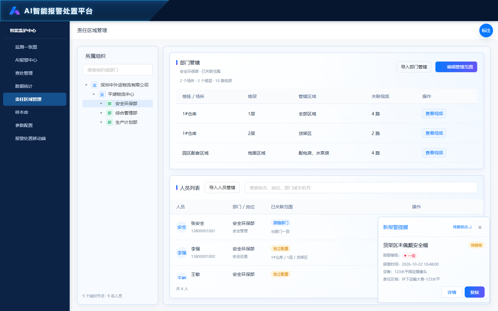
页面截图为实际预览快照；标注文字保存后即时同步，截图需重新拍摄刷新。
责任区域管理一级菜单位于查处管理下、参数配置上。当前页面已实现，用于维护部门及人员管辖的楼栋、楼层、区域与视频，不再是空白占位。左侧组织树，右侧部门管辖与人员列表。以下按当前代码核对，不将本聊天未讨论的未来功能写为确认需求。
左侧可搜索组织或部门。选中部门显示自身范围；业务单位显示下属部门范围去重汇总，编辑部门范围按钮禁用。部门表格字段为楼栋/场所、楼层、管辖区域、关联视频、操作；视频按钮打开对应楼层已关联视频。
选中组织及其下属部门的人员可按姓名、岗位、部门、手机号搜索。展示人员姓名与手机号、部门与岗位、已关联范围、操作。人员模式为跟随部门或独立配置；提供查看范围、编辑管辖范围。分页支持5、10、20人，切换组织、关键词或每页条数回到第一页。
【短信签名】您管辖区域有一条经核警确认的违规报警：{事件类型}，等级：{报警等级}，位置：{所属区域}，摄像头：{摄像头名称}，时间：{报警时间}。请及时接收并处置：{小程序链接}。 仅AI核警确认违规触发，向全部匹配安管人员逐人发送。报警等级取最终等级，所属区域为完整路径，报警时间取首次报警；签名采用获准实际值。小程序链接校验身份权限，首位成功接收人锁定处置，其他人员只读。消防不发处置短信。真实短信服务尚未接入。
部门编辑直接配置范围；人员编辑可按部门继承或按个人独立配置。按部门显示只读继承范围；按个人显示楼栋/楼层/区域勾选树与关联视频，树支持级联、搜索、清空。部门或独立配置保存要求至少关联一个楼栋、楼层或区域；继承模式可保存空部门范围。保存前草稿不改变已生效数据。 任务通知规则：核警确认违规后，根据报警摄像头位置及有效管辖范围解析全部相关安管人员；跟随部门／班组及个人独立范围按已有配置解析，场所包含与显式摄像头关联取并集。选班组全部成员则逐人短信通知，不只通知班组长；同人多范围匹配按稳定人员ID去重。首位成功接收人锁定负责人，其他人员只读；通知匹配不代表所有人都成为主要负责人。 任务通知规则：核警确认违规后，根据报警摄像头位置及有效管辖范围解析全部相关安管人员；跟随部门／班组及个人独立范围按已有配置解析，场所包含与显式摄像头关联取并集。选班组全部成员则逐人短信通知，不只通知班组长；同人多范围匹配按稳定人员ID去重。首位成功接收人锁定负责人，其他人员只读；通知匹配不代表所有人都成为主要负责人。
编辑中关联视频打开独立选择层，支持搜索、区域过滤、分页和当前页选择。区域内隐式关联视频不可重复手动勾选，计数去重。确认后仅更新编辑草稿，最终保存范围才生效。人员查看范围与查看视频为只读弹层，关闭返回来源界面。
编辑抽屉关闭时检测修改；有修改先提示确认放弃。保存成功写入浏览器，关闭抽屉并提示；失败保留输入和错误。个人按部门模式随部门配置变化，独立配置保持个人范围。当前未与移动端报警派单建立真实权限联动。
支持导入部门管辖、人员管辖，默认合并策略；上传后解析并预览，可仅看错误并下载错误明细。部门名称须匹配已有部门；人员需匹配所属部门与姓名，重名需手机号；人员方式为跟随部门或独立配置。跟随部门时楼栋/楼层/区域应留空；独立配置按有效场所层级解析。单次最多2000行。全部错误修正后才能确认导入，失败不更新已保存范围。切换导入类型或关闭清空本次预览。
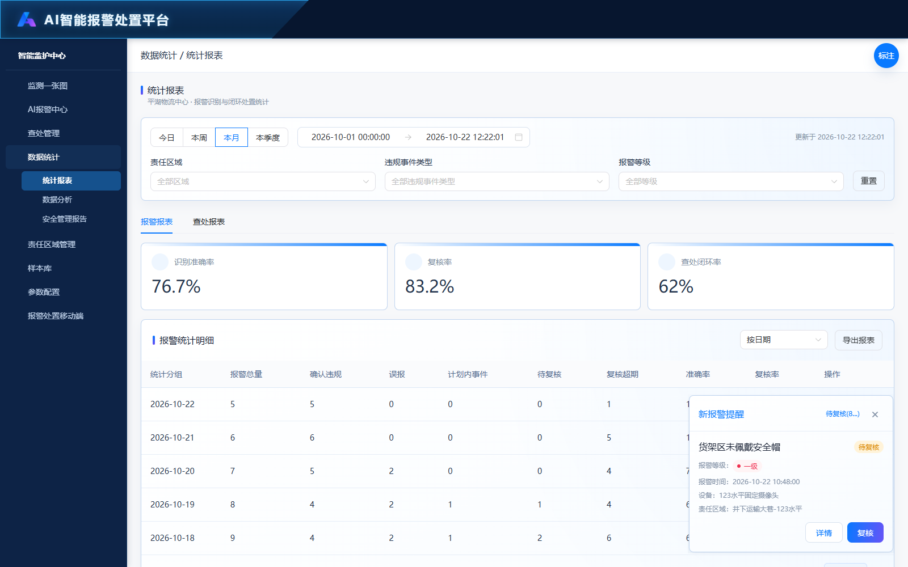
页面截图为实际预览快照；标注文字保存后即时同步，截图需重新拍摄刷新。
默认本月，可选今日、本周、本月、本季度或自定义时间范围；按报警发生时间筛选，跨度不超过一年。责任区域、违规事件类型、报警等级可清空；重置恢复本月并清空这三项筛选。
复核结果为确认违规、误报、计划内事件、疑似。疑似作为独立结果计入已复核数量，不计入确认违规、误报和准确率样本，不自动生成查处记录。识别准确率＝确认违规÷（确认违规＋误报）；复核率＝已复核÷报警总量。
点击指标、排行或明细入口后携带当前时间范围和对应记录跳转报警复核或查处管理。来源筛选、Tab及统计维度保存在当前浏览器会话，点击返回恢复来源。统计演示明细仅供查看，不写入业务台账。
报警统计、结果分布、报表明细与合计、导出及安全管理日报/周报/月报预览、下载统一包括确认违规、误报、计划内事件、疑似；新报告的总体情况与事件类型明细均包含四类数量。报告为生成时快照，旧报告不追溯改写，旧快照缺失疑似数量显示“—”，不是0；重新生成获取新统计。
报警统计、结果分布、报表明细与合计、导出及安全管理日报/周报/月报预览、下载统一包括确认违规、误报、计划内事件、疑似；新报告的总体情况与事件类型明细均包含四类数量。报告为生成时快照，旧报告不追溯改写，旧快照缺失疑似数量显示“—”，不是0；重新生成获取新统计。
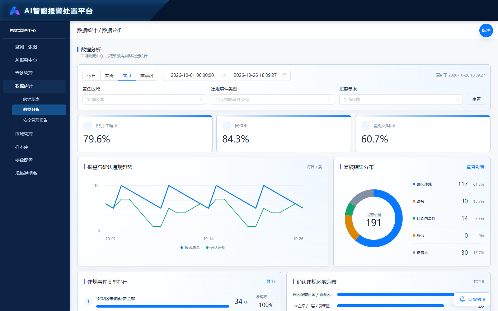
页面截图为实际预览快照；标注文字保存后即时同步，截图需重新拍摄刷新。
默认本月，可选今日、本周、本月、本季度或自定义时间范围；按报警发生时间筛选，跨度不超过一年。责任区域、违规事件类型、报警等级可清空；重置恢复本月并清空这三项筛选。
复核结果为确认违规、误报、计划内事件、疑似。疑似作为独立结果计入已复核数量，不计入确认违规、误报和准确率样本，不自动生成查处记录。识别准确率＝确认违规÷（确认违规＋误报）；复核率＝已复核÷报警总量。
点击指标、排行或明细入口后携带当前时间范围和对应记录跳转报警复核或查处管理。来源筛选、Tab及统计维度保存在当前浏览器会话，点击返回恢复来源。统计演示明细仅供查看，不写入业务台账。
报警统计、结果分布、报表明细与合计、导出及安全管理日报/周报/月报预览、下载统一包括确认违规、误报、计划内事件、疑似；新报告的总体情况与事件类型明细均包含四类数量。报告为生成时快照，旧报告不追溯改写，旧快照缺失疑似数量显示“—”，不是0；重新生成获取新统计。
复核结果为确认违规、误报、计划内事件、疑似。疑似作为独立结果计入已复核数量，不计入确认违规、误报和准确率样本，不自动生成查处记录。识别准确率＝确认违规÷（确认违规＋误报）；复核率＝已复核÷报警总量。
单独一张图展示处置闭环率，沿用相同时间及业务筛选。按报警发生日期归组，展示这些报警截至当前的完成比例；数据点提示日期、闭环率、已闭环量、确认违规量、待闭环量。近期报警可能仍在正常处置周期内，不能只凭曲线下降判定处置效率下降；无确认违规不画比率点。
智能分析根据当前查询范围显示中文场景说明。没有报警时显示暂无数据；没有待复核时不再要求复核；确认违规全部完成时明确已全部闭环，但仍有待复核则继续提醒。01说明接收处置，02说明区域分布，03说明复核与样本。每个场景的标题、正文和按钮详见本页场景标注及说明书4.10节，不使用字母条件公式。本次未修改页面分析逻辑。
智能分析只分析当前查询范围内的AI报警，不包含消防报警。同一报警合并了多条信号，仍按一条报警统计，不因短信发给多人而增加报警数量。 综合研判优先提醒尚未完成的处置超期任务，其次提醒超期待复核、普通待复核，再提醒未闭环任务。只有确实没有待复核和未闭环任务时，才使用全部完成或常态观察类提示。三张建议卡分别说明：01跟进任务接收和处置；02查看区域分布；03完成复核或核查样本。 多个情况同时存在时，综合研判标题先突出最紧急的一项，正文补充其他实际情况，不能隐去剩余待办。例如，有超期待处置和待复核时，标题优先提示超期待处置，正文仍要说明还有多少条待复核。已全部闭环只指当前已经确认违规的记录，不代表尚未核实的报警也处理完了。 正文中的数量全部来自当前查询结果。闭环率没有可计算的确认违规记录时显示“—”；准确率没有确认违规或误报样本时也显示“—”，不能当作零或百分之百。百分比通常保留一位小数；是否全部闭环按实际完成条数判断，不能因四舍五入显示百分之百就说全部完成。 以下是需求说明及文案规范；本次只调整文档与标注，页面尚未完成全部场景改造，不代表真实模型推理。 本次是说明文案调整，页面分析逻辑尚待按场景实现，截图未重拍。
场景一：当前查询条件下，没有任何AI报警信息。 综合研判标题：“当前筛选范围暂无AI报警记录”。 正文：“当前查询条件下未查到AI报警记录。请调整时间、区域或其他筛选条件后查看；无报警记录不代表设备在线或现场无风险。” 右侧分析记录、待闭环事件、未完成处置超期均显示零条，准确率和闭环率显示“—”。01、02、03三张建议卡不显示，也不出现查看空任务的按钮。某个区域或设备关联范围没有报警时，同样适用；不能据此说设备运行正常或现场绝对安全。 场景二：待复核为零条，所有报警都已经复核，但还有任务没有完成。 综合研判必须说明“当前筛选范围内报警已全部复核”，不再提示“请先完成待复核”。 如果有尚未完成的处置超期任务，标题：“建议优先推动超期待处置记录闭环”。如果没有处置超期，但还有待接收，标题：“建议及时接收任务并推进处置闭环”。如果任务都已接收、尚未完成但也未超期，标题：“当前未闭环任务尚未超期，请按时完成处置”。 正文：“当前筛选范围内报警已全部复核。确认违规{确认违规条数}条，已闭环{已闭环条数}条，待闭环{待闭环条数}条，其中待接收{待接收条数}条、待处置{待处置条数}条。”再补充实际闭环率和是否存在处置超期。 01根据实际情况显示优先处理超期、及时接收或按时处置，使用场景六至八的对应文案。02根据实际确认违规区域显示，使用后述区域场景。03有误报时显示“复查误报场景”；没有误报但有确认违规时显示“保持复核质量”，不能继续显示“查看待复核”。 场景三：确认违规已经全部完成处置，闭环率百分之百，并且没有待复核。 综合研判标题：“当前确认违规已全部闭环，建议持续巡查”。 正文：“当前筛选范围内报警已全部复核，{确认违规条数}条确认违规已全部闭环，闭环率100%。建议持续检查整改保持情况，防止同类问题再次发生。” 01标题：“当前确认违规已全部闭环”；提示：“已闭环{确认违规条数}条，闭环率100%”；建议：“复查整改结果并持续巡查，防止同类问题再次发生。”按钮：“查看已闭环”，只查看当前范围已完成的AI任务。 02仍可说明历史确认违规较多的区域，但只能建议巡查和巩固整改，不能说这些记录仍待处置。03有误报时核查误报，没有误报时保持复核质量。不存在待办时，不再出现“查看未闭环”或“优先处理超期事件”。 本次是说明文案调整，页面分析逻辑尚待按场景实现，截图未重拍。
场景四：当前已确认的违规全部闭环，但仍有报警没有复核。 综合研判标题：“建议先完成待复核记录，明确后续处置需求”；如果待复核已超期，改为：“建议优先完成超期待复核记录”。 正文：“当前{确认违规条数}条确认违规已全部闭环，闭环率100%；仍有{待复核条数}条报警待复核，核实后可能新增处置任务，不能认定全部报警已处理完成。”有超期待复核时补充具体条数。 01显示“当前确认违规已全部闭环”，可查看已闭环记录；02按已确认违规的区域分布提示；03显示待复核或超期待复核建议。闭环率百分之百与仍需核警可以同时存在。 场景五：存在待复核报警，目前还没有确认违规。 综合研判标题：“建议先完成待复核记录，明确后续处置需求”；若待复核已超期，标题改为：“建议优先完成超期待复核记录”。 正文：“当前有{待复核条数}条报警待复核，尚无确认违规记录，闭环率为‘—’。请核对原始画面与现场事实，确认违规后再生成处置任务。” 01标题：“暂无待处置任务”；提示：“暂无确认违规，待复核{待复核条数}条”；建议：“先完成报警核实，仅确认违规后才生成处置任务。”按钮：“查看待复核”。 02标题：“暂无确认违规区域”；建议：“暂不推荐重点违规区域，保持常态巡查并等待有效核警结论。”不显示区域下钻按钮。03显示对应的普通或超期待复核建议。不能把待复核先当作违规或误报。 场景六：还有已接收、未完成且已经超过处置期限的任务。 综合研判标题：“建议优先推动超期待处置记录闭环”。 正文：“当前还有{未完成处置超期条数}条已接收任务超过处置期限，请优先跟进负责人和现场整改进展。”同时如实补充其他待接收、待处置、待复核条数。 01标题：“优先处理超期事件”；提示：“仍有{未完成处置超期条数}条超期待处置”；建议：“优先联系已接收任务的负责人，核实现场整改进展并完成结果提交；其他人员可查看进度，由接收人负责处置。”按钮：“查看超期待处置”，只查看当前范围内已接收、未完成且超期的AI任务。 02照常展示区域情况；03有待复核就提醒复核，没有待复核则按误报或有效样本情况提示。已经完成但历史上曾超期的记录，不属于这里的未完成超期任务。 场景七：没有未完成处置超期，但还有任务尚未接收。 没有待复核时，综合研判标题：“建议及时接收任务并推进处置闭环”。如果同时还有待复核，标题先突出复核，正文仍补充待接收情况。 01标题：“及时接收待办任务”；提示：“{待接收条数}条待接收，{待处置条数}条待处置”；建议：“先核实责任区域并及时接收待办；已有接收人的任务由该人继续处置，不重复接收。”按钮：“查看待接收”。 待接收尚未开始接收后处置计时，不能算作“接收后处置超期”。02按区域展示；03按复核及误报情况展示。 场景八：所有未完成任务都已接收，还未超出处置期限。 没有待复核时，综合研判标题：“当前未闭环任务尚未超期，请按时完成处置”。如有待复核，标题先提醒复核，正文补充处置尚未超期。 01标题：“按时完成处置”；提示：“{待处置条数}条待处置，暂无未完成处置超期”；建议：“按处置时限推进现场整改并提交结果，当前不能据此判断处置超期。”按钮：“查看待处置”。 02按区域展示；03按复核及误报情况展示。不因为闭环率还没达到百分之百，就直接认定处置效率下降。 本次是说明文案调整，页面分析逻辑尚待按场景实现，截图未重拍。
场景十三：没有确认违规，或者确认违规都没有关联区域。 没有确认违规时，02标题：“暂无确认违规区域”；提示：“当前无确认违规区域分布”；建议：“暂不推荐重点违规区域，保持常态巡查并等待有效核警结论。”无按钮。 有确认违规但全部缺少所属区域时，02标题：“补全报警所属区域”；提示：“{区域缺失条数}条确认违规的区域待核实”；建议：“核实摄像头与责任区域关联，补齐区域后再开展排名，不能把‘未分配’当真实重点区域。”按钮：“查看区域待核实记录”，仅查看区域缺失的确认违规。 场景十四：确认违规只分布在一个有效区域。 02标题：“关注当前区域”；提示：“{区域名}有{区域确认违规条数}条确认违规，占确认违规{区域占比}”；建议：“当前数据仅覆盖一个有效区域，不能据此认定其相对其他区域风险更高；请检查现场措施和整改保持情况。”按钮：“查看区域记录”。 场景十五：有多个区域，某一个区域确认违规数量最多。 02标题：“关注违规记录较多区域”；提示：“{区域名}有{区域确认违规条数}条确认违规，占确认违规{区域占比}”；建议：“该区域确认违规记录数量最多，建议核查作业组织、防护措施及现场秩序；记录数量不等于风险率。”按钮：“查看区域记录”，只看该区域确认违规。 场景十六：多个区域的确认违规数量并列最多。 02标题：“关注并列较多区域”；提示：“{并列区域个数}个区域并列，每个{区域确认违规条数}条确认违规”；建议：“{区域名列表}的确认违规数量并列最多，建议逐区核查现场措施，不擅自选一个作为唯一重点。”按钮：“查看并列区域”，包含所有并列区域。 区域排名只按确认违规条数，不能按总报警量排序。有部分确认违规缺少区域时，在有效区域建议后补充：“另有{区域缺失条数}条确认违规区域待核实，可能影响区域比较。”占比以全部确认违规为分母，缺失区域的记录也在分母内。 并列区域名称较多时，按名称稳定排序，显示前三个及“等{并列区域个数}个区域”，点击仍查看完整集合。未约定高发阈值，不写“高风险”“异常集中”“显著上升”。即使全部闭环，02仍可用于巡查分析，但不称这些历史记录尚未处置。 本次是说明文案调整，页面分析逻辑尚待按场景实现，截图未重拍。
场景九：所有报警均已复核，存在误报，但没有确认违规。 综合研判标题：“当前无确认违规，建议复查误报场景”。正文：“当前暂无确认违规记录，闭环率为‘—’；存在{误报条数}条误报，建议核查原始画面及现场条件。”如果还有计划内事件，一并如实说明。 01标题：“暂无待处置任务”；建议：“保持常态巡查；误报及计划内事件不生成处置任务。”无操作按钮。02显示“暂无确认违规区域”，无按钮。03标题：“复查误报场景”；提示：“已全部复核，存在{误报条数}条误报”；建议：“结合误报样本核查画面、遮挡及场景变化，未经现场核验不直接调整识别策略。”按钮：“查看误报”。 全部有效样本都是误报时准确率可以显示零，但不能仅据此断言算法失效。 场景十：查询结果全部是计划内事件。 综合研判标题：“当前记录均为计划内事件，建议持续巡查”。正文：“当前{计划内事件条数}条记录均已复核为计划内事件，无需生成处置任务；暂无可用于准确率及闭环率计算的有效样本，两项显示‘—’。” 01显示“暂无待处置任务”，不显示按钮。02显示“暂无确认违规区域”，不显示按钮。03标题：“当前记录均为计划内事件”；提示：“{计划内事件条数}条计划内事件，无有效准确率样本”；建议：“保留计划依据和核警记录，持续观察场景变化；不生成处置任务，不作为误报样本。”按钮：“查看计划内事件”。 场景十一：仍有待复核，需要确定03显示哪种提醒。 有超期待复核时，03标题：“优先完成超期待复核”；提示：“{超期待复核条数}条复核已超期，共{待复核条数}条待复核”；建议：“先核对超期记录的原始画面与现场事实，形成可追溯结论，再安排其余复核。”按钮：“查看超期待复核”。 没有超期待复核时，03标题：“完成待复核记录”；提示：“{待复核条数}条待复核，暂无待复核超期”；建议：“按复核时限核实原始画面与现场事实，确认违规后再生成处置任务。”按钮：“查看待复核”。 即使同时存在历史误报，03也先提示完成复核，可在建议后补充“另有{误报条数}条历史误报，可在复核完成后核查。”按钮仍查看待复核，不跳到误报。已经复核但曾经超期的记录不能算当前超期待复核。 场景十二：没有待复核，也没有误报，但有确认违规。 03标题：“保持复核质量”；提示：“已全部复核，暂无误报，确认违规{确认违规条数}条”；建议：“继续抽查已确认违规证据与核警一致性；当前样本准确率100%，不代表算法永不误报，或所有报警已完成处置。”按钮：“查看确认违规”。 如果没有待复核但存在误报，03改用场景九的误报文案；如果只有计划内事件，改用场景十。综合研判和01仍按实际处置进度显示，不能用准确率百分之百替代闭环率百分之百。 本次是说明文案调整，页面分析逻辑尚待按场景实现，截图未重拍。
场景十七：数据正在加载，或者查询条件无效。 加载时显示：“正在分析当前查询范围…”。时间条件无效时显示：“请选择有效的时间范围后查看分析。”不输出旧的业务结论，不生成三张建议卡。 场景十八：数据读取失败，或数量及状态不一致。 读取失败显示：“分析数据加载失败，请重试。”按钮：“重试”，重新读取当前范围。数据缺失、状态冲突或无法判断关键时间时显示：“当前分析数据存在缺失或状态不一致，请核对数据后重试。”不把缺失数据当零，不生成业务建议或跳转。 场景十九：点击建议按钮时，对应记录已经不存在。 提示：“当前条件下暂无对应记录，请刷新分析。”保留查询条件，不跳到无关记录。所有下钻保留当前时间、区域、事件类型及等级；返回分析页恢复当前查询，不能为查到数据而清空条件。 查看超期待处置、待接收、待处置及已闭环，进入查处管理对应AI记录；查看待复核、超期待复核、误报、计划内事件、确认违规及区域记录，进入AI报警中心对应记录。零条目标不显示操作按钮，不能保留“查看零条待办”。查看并列区域时保留全部并列区域，不能扩大成全区域。 综合研判右侧“分析记录”为当前全部AI报警数，“待闭环事件”为确认违规中尚未完成的任务数，“未完成处置超期”为已接收、尚未完成并超期的任务数。没有确认违规不能说全部闭环；没有超期不能说全部完成；只收到一条样本也不能概括全部算法表现。 规则追溯：BR-28对应范围及异常反馈，BR-29对应综合研判文案，BR-30对应三张建议卡，BR-31对应下钻与返回。FR-123细化FR-105，要求按以上业务场景显示文案，不向用户展示字母变量、条件公式或内部场景代码。 ## 5 页面功能需求 以下覆盖14个页面。每项FR的来源为对应原型有效标注；“当前实现”字样描述的是基线状态。详细验收结合第7节执行。AI页面、移动任务、样本和统计明细均受BR-14的来源隔离规则约束；查处管理按来源分支展示；旧演示记录具备复核字段不代表消防可纳入这些模块。 ### 5.1 平台入口 原型页面：index.html 本次是说明文案调整，页面分析逻辑尚待按场景实现，截图未重拍。
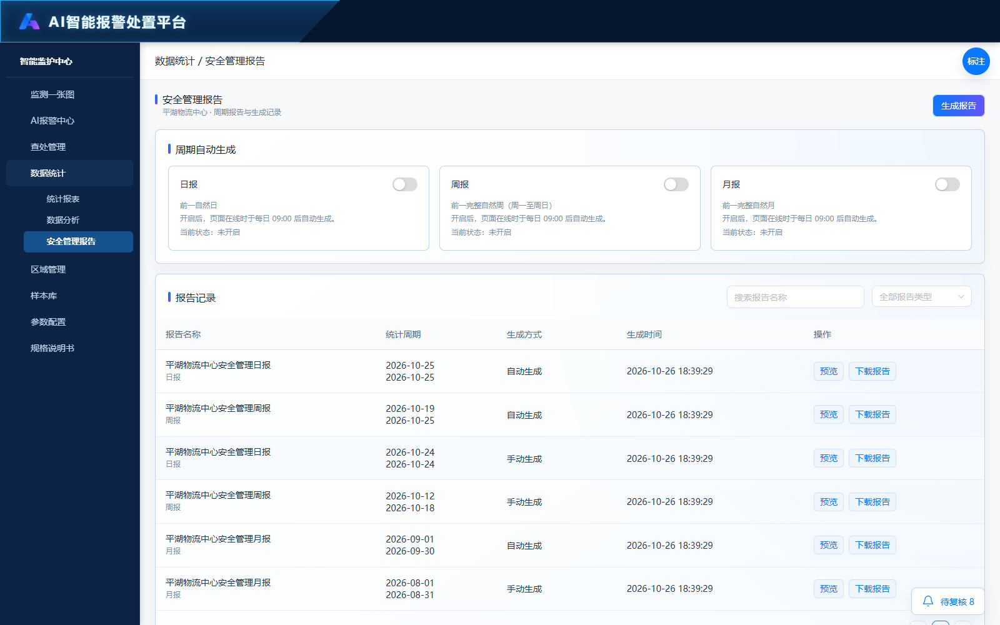
页面截图为实际预览快照；标注文字保存后即时同步，截图需重新拍摄刷新。
数据统计下的安全管理报告，用于按周期生成、预览、下载报告并管理自动生成开关。报告为生成时的冻结快照，后续业务数据变化不会改写已有报告。
日报覆盖前一自然日，周报覆盖前一完整自然周（周一至周日），月报覆盖前一完整自然月。三个开关独立控制。文案统一为“开启后，页面在线时于每日 09:00 后自动生成。”并单独显示“当前状态：已开启／未开启”。
仅页面打开时在09:00后检查，打开页面或开启开关后检查，并每分钟再次检查；同一类型、周期和数据来源只自动生成一次。页面关闭后暂停，并非后台定时服务，不保证09:00准点执行。设置及报告保存在当前浏览器。
报告列表展示名称、类型、统计周期、生成方式、生成时间和操作；支持名称搜索、类型筛选及分页。初始演示报告用于展示列表，不表示当前开关已经开启或真实后台曾执行。
页面右上角生成报告打开弹窗，可选日报、周报、月报或自定义；预设类型自动填充相应完整周期。自定义周期须开始不晚于结束、不超过366天，结束不能晚于当前时间。生成成功保存快照并打开预览，失败保留输入并提示。
报警统计、结果分布、报表明细与合计、导出及安全管理日报/周报/月报预览、下载统一包括确认违规、误报、计划内事件、疑似；新报告的总体情况与事件类型明细均包含四类数量。报告为生成时快照，旧报告不追溯改写，旧快照缺失疑似数量显示“—”，不是0；重新生成获取新统计。
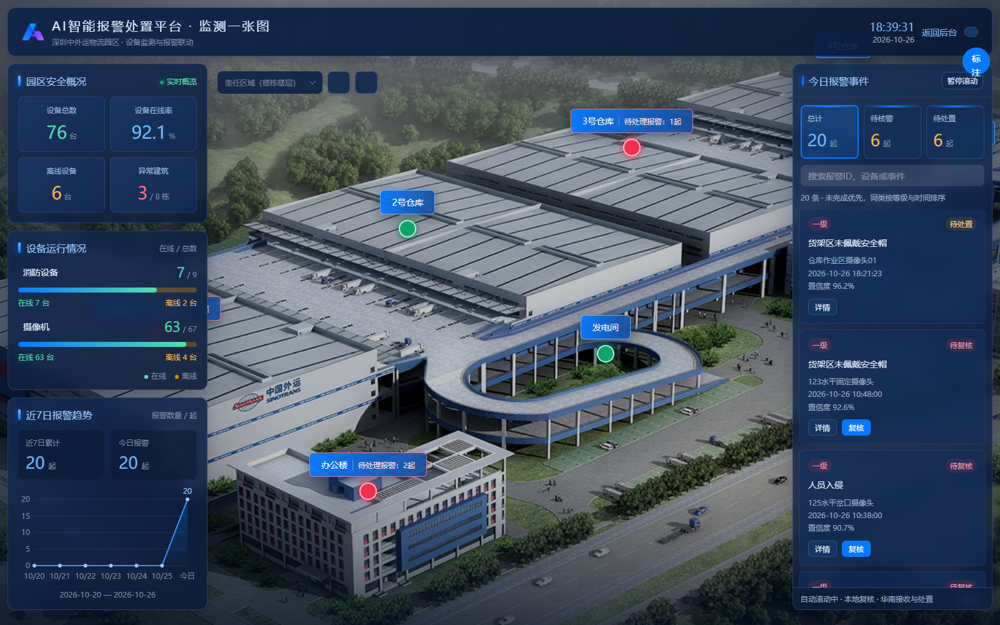
页面截图为实际预览快照；标注文字保存后即时同步，截图需重新拍摄刷新。
独立全屏深蓝监测布局，顶部显示平台、园区、当前日期时间、返回后台与全屏按钮。返回后台进入AI报警中心；全屏按钮申请或退出系统全屏。平台入口与品牌入口均进入本页。
园区鸟瞰底图仅显示楼栋点位，包含仓库、办公楼、发电间、叉车充电间及配套区域。点位显示楼栋名称和未完成报警数量；点击打开建筑概况，不直接打开设备。支持拖拽、缩放与复位；底图加载失败可重试。点位坐标及楼层布局为演示数据。
消防设备与摄像机分别统计在线数和总数，离线与业务报警分别表达。消防报警只有待处置、已处置两种业务状态，仅提供详情，无接收、复核和处置填写入口；无报警等级，不参与等级筛选及等级优先排序。AI违规报警沿用复核、接收、处置规则。
鸟瞰层只保留责任区域（楼栋楼层）树选择、重置和报警栏展开收起。已移除设备类型、违规事件类型、报警等级筛选；加载时清除这些旧选中值，避免隐藏条件继续过滤。选择楼层同步所属楼栋，重置恢复默认范围、今日全部报警与初始地图视图。
接收和处理由上级华南平台执行。本地查处管理及今日报警、楼层报警隐藏接收和处理按钮；查处管理列表、详情底栏和旧处置链接均不再提供本地处理入口，旧链接只打开详情。保留复核、详情、电话介入和结果查看。华南真实接口尚未接入。消防无等级且标题顶到左上，状态右对齐。
监测一张图与楼层报警的复核按钮仅复核人员可用，其他角色只查看详情。大屏接收、处置入口保持隐藏；查处管理的处置入口已恢复，仅处置人员可用。消防不提供AI复核或本地处置。真实华南接口尚待对接。
楼栋点位打开建筑概况，显示消防与摄像机在线数、今日总报警、待核警、待处置及今日报警记录；消防记录包含待处置和已处置示例。点击记录打开对应报警详情；查看详情进入该楼栋楼层监测，返回单位鸟瞰回到鸟瞰视图。无法匹配设备的报警提示暂无设备位置。
当前大屏复核、接收与处置均在页内完成。浏览器会话保存范围、缩放偏移、侧栏、选中项等；重新加载或返回后读取共享报警最新状态，不匹配的选中项取消并提示。已有独立复核页与查处管理页保留携带报警ID和大屏来源参数的兼容入口，不作为当前大屏按钮的默认跳转。
园区设备、报警、楼层位置、读数与视频表现为原型演示，使用当前浏览器共享存储，不代表真实消防主机、视频流、后台推送或权限服务。消防完成状态可来自报警状态或已有完成记录；楼层历史报警不提供写操作。截图本次未刷新，阅读页不使用示意图冒充页面截图。
左侧园区安全概况按全园设备统计总数、在线率、离线数和存在未完成报警的建筑数；消防设备与摄像机分别显示在线／总数、在线率进度和离线数。七日趋势按连续七个自然日统计报警量，展示累计与今日数量；不随局部楼栋筛选变为局部统计。
【原本地操作入口已隐藏】接收和处理由上级华南平台执行。本地查处管理及今日报警、楼层报警隐藏接收和处理按钮；查处管理列表、详情底栏和旧处置链接均不再提供本地处理入口，旧链接只打开详情。保留复核、详情、电话介入和结果查看。华南真实接口尚未接入。
楼层监测显示当前楼栋、一层至各楼层及屋顶切换、2.5D演示平面、左侧设备分类与当前楼层报警。分类为独立式电气火灾监控探测器、水压监测装置、水浸监测装置、摄像头，统计在线与离线。分类按钮筛选点位；点击设备显示名称、编号、类型、区域、在线状态和实时监测演示值。摄像机未接入直播时明确提示；支持平面拖拽、缩放和复位。 水浸装置单独分类，展示总数、在线与离线数量，点击筛选当前楼层水浸点位；点位详情显示水浸装置类型、编号、区域及积水监测状态。每个普通演示楼层新增两台水浸设备，设备总数同步增加至12台。
事件判定为独立字段，示例选项为违规或异常、穿戴不规范、画面异常、算法误报。复核页位于复核结果上方，可选择并随提交保存；详情位于复核结果区块内，紧跟复核结果字段，无值显示“—”。不将事件判定等同于复核结果，不放入查处详情的报警基本信息。接收和处理由上级华南平台执行。本地查处管理及今日报警、楼层报警隐藏接收和处理按钮；查处管理列表、详情底栏和旧处置链接均不再提供本地处理入口，旧链接只打开详情。保留复核、详情、电话介入和结果查看。华南真实接口尚未接入。
大屏页内复核结果支持确认违规、误报、计划内事件、疑似；疑似不计准确率判定样本且不自动生成查处记录。原型仍保留本地复核能力，不提供接收、处理入口。
当前楼层报警列表支持定位对应点位，AI按阶段提供详情／复核／接收／处置，消防仅详情。消防未完成显示待处置，完成显示已处置，不显示报警等级及置信度。消防详情挂载至页面最外层并置于顶部栏之上，遮罩与详情不受楼层容器层级裁剪；关闭或Esc返回原楼层。切换楼层更新设备、报警和异常计数，设备在线状态与报警业务状态分别展示。 当前楼层新增水浸报警待处置和已处置各一条演示记录，均为消防来源、无AI等级，点击卡片定位对应点位，详情只读。楼层待处理徽标仅计待处置，不把已处置历史算入待办；设备在线离线统计不与报警状态混用。
与查处管理相同的内部人员选择弹窗：左侧组织树可搜索部门或班组，选组织包含其下级部门；右侧按人员姓名搜索，表格展示姓名、账号、手机号、部门、班组、岗位，每页10人，单选。已选人员在顶部展示，可清除；确认回填，关闭放弃本次选择，重开带入当前已选值并重置搜索。外来人员不使用此弹窗，在处置表单填写姓名和手机号。
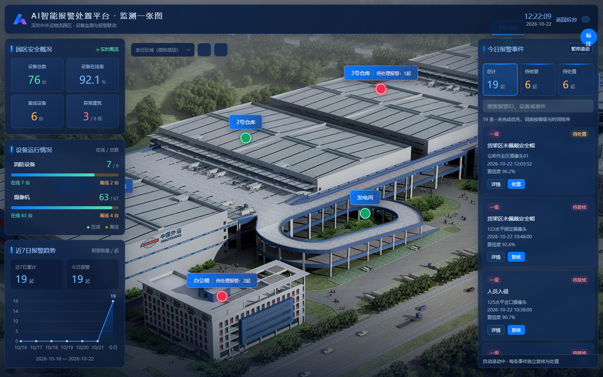
页面截图为实际预览快照；标注文字保存后即时同步，截图需重新拍摄刷新。
默认入口进入监测一张图独立监测大屏，保留进入平台链接。平台首页菜单及首页功能页面已移除；平台品牌入口同样进入监测一张图。
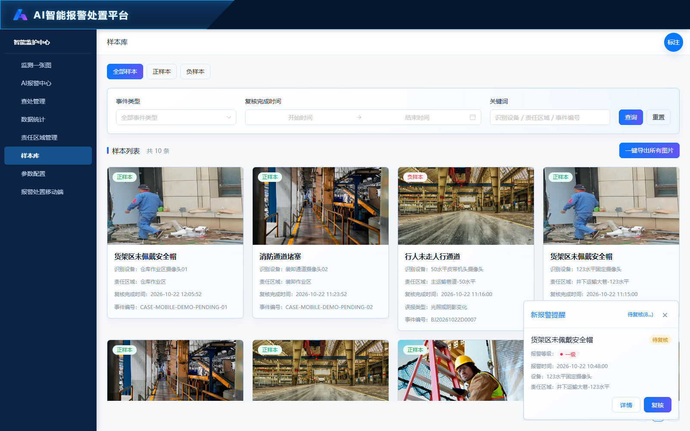
页面截图为实际预览快照；标注文字保存后即时同步，截图需重新拍摄刷新。
样本库只收录AI来源、已复核、结果为确认违规或误报且复核时间有效的报警。确认违规为正样本，误报为负样本；消防、待复核、计划内事件排除。消防即使带有旧确认违规字段也不得收录。
Tab分为全部样本、正样本、负样本。筛选事件类型、复核完成时间起止和关键词，关键词匹配识别设备、责任区域、事件编号。点击查询或关键词回车后生效，重置清空条件；Tab或查询变化回到第1页，每页12条，按复核时间倒序。
每张卡片展示报警照片、正负样本标签、事件类型、识别设备、责任区域、复核完成时间与事件编号；负样本补充误报类型，缺失显示未填写。无命中显示空态，调整筛选后可重查。
导出当前Tab和已应用筛选命中的全部图片，跨越当前分页，打包为ZIP。文件名由设备、事件类型、样本类别组成，非法字符清理、重名追加序号。无记录时禁用，导出中显示加载并防重复点击；成功提示图片数，读取失败显示原因及网页服务打开建议。file协议可能无法读取图片，不宣称导出成功。
来源为样本卡片照片，点击打开当前设备与样本类型标题的图片预览；照片保持比例，关闭返回原列表和查询条件，不修改样本。
尚无当前页面截图；保存标注只同步文字与定位数据。
一级菜单规格说明书位于报警处置移动端下方，点击进入资料入口页；需求规格说明书入口在新标签页打开最新版HTML评审稿。
业务流程图入口在新标签页打开既有AI报警与消防设备报警业务流程图V2。该图为既有图像，后续新规则以最新版说明书为准，本次未重绘流程图。
| 来源 | 触发 | 目标 | 返回与结果 |
|---|---|---|---|
| 平台入口／平台品牌 | 打开平台 | 监测一张图 | 默认进入园区鸟瞰 |
| 一张图楼栋点位 | 点击楼栋 | 建筑概况临时层 | 关闭回到鸟瞰 |
| 建筑概况 | 查看详情 | 所属楼栋楼层监测 | 返回单位鸟瞰 |
| 消防报警记录 | 详情 | 消防只读详情 | 关闭回到当前鸟瞰或楼层，无处置写操作 |
| AI待复核报警 | 复核 | 大屏页内复核弹窗 | 确认保存后刷新，取消不保存 |
| AI待接收报警 | 接收 | 确认框 | 确认后进入待处置 |
| AI待处置报警 | 处置 | 大屏页内处置弹窗 | 提交后刷新，取消返回 |
| AI报警中心／全局提醒 | 详情或复核 | 报警详情／独立复核页 | 携带报警ID；关闭或返回来源 |
| 查处管理 | 详情／处置／电话介入 | 对应抽屉或弹窗 | 关闭返回当前台账 |
| 统计报表／数据分析 | 指标或明细下钻 | 报警中心／查处管理 | 携带记录范围，返回恢复来源筛选 |
| 安全管理报告 | 生成／预览 | 生成表单／报告预览 | 关闭回到报告列表，下载独立HTML |
| 责任区域管理 | 编辑范围／关联视频／导入 | 对应编辑、选择或导入临时层 | 确认回填草稿，保存后更新范围 |
| 样本库 | 点击照片 | 图片预览 | 关闭保留列表查询条件 |